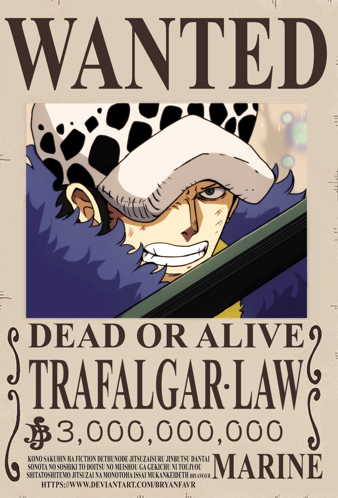
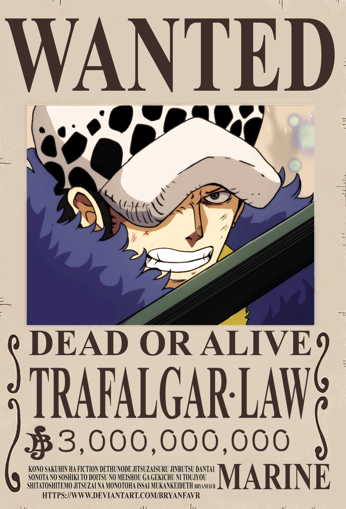

Articles
Monkey D. Luffy est un pirate joyeux, déterminé et animé par un rêve colossal : devenir le Roi des Pirates.
Avec une personnalité simple mais magnétique, il inspire tous ceux qu’il rencontre par son optimisme inébranlable et sa foi inconditionnelle en ses amis.
Luffy valorise la liberté avant tout et défend ses convictions avec une volonté de fer, refusant de plier face à l’injustice ou à la cruauté.
Derrière son attitude parfois naïve et enfantine se cache un leader charismatique, capable de rallier des alliés improbables et de surmonter des obstacles insurmontables.
Sa force, sa résilience et son amour indéfectible pour son équipage font de lui un capitaine hors du commun.